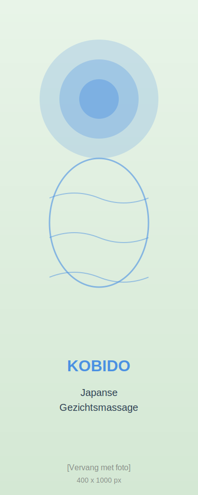

KOBIDO UP
Japanse Gezichtsmassage
Duurtijd: 90 minuten
Laat je verwennen met een diepe, ontspannende en natuurlijk liftende gezichtsmassage
Voordelen:
- Stimuleert collageen productie
- Verbetert huid-elasticiteit
- Vermindert fijne lijntjes en rimpels
- Activeert de lymfedrainage en bloedcirculatie
- Verbetert en lift gezichtscontour
- Pure ontspanning voor gezicht en geest
Wat is gezichtstaping?
Gezichtstaping is een techniek na de Kobido-massage waarbij speciale tapes op de huid worden aangebracht.
Ze helpen om het liftend effect te behouden, spanningen te verminderen en de doorbloeding te verbeteren.
Je huid blijft langer fris en stralend
